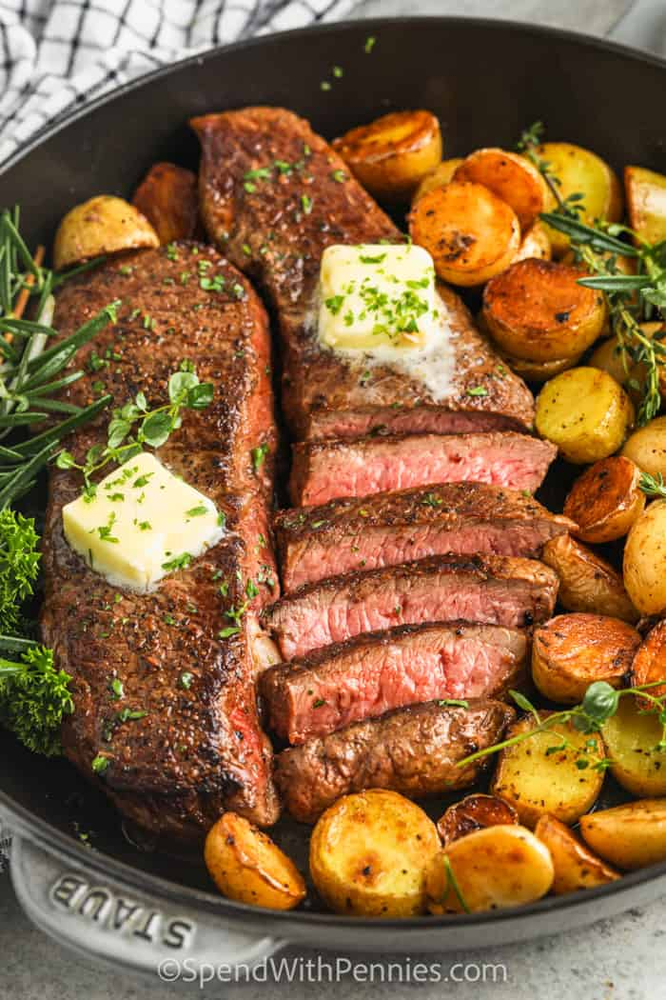

Garlic Butter Steak and Potatoes

Description
The main course.. A flank steak, cooked to perfection, smothered in garlic butter, and served with a side of crisp golden potatoes.
Ingredients
- Flank Steak
- Yukon Gold Potatoes
- Olive Oil
- 3 Tablespoons Butter
- Garlic
- Thyme
- Rosemary
- Oregano
- Salt and Pepper
- Soy Sauce
- Sriracha
Steps
- To prepare the garlic butter steak recipe with potatoes wedges: In a large bowl, combine the steak strips with soy sauce, olive oil, pepper, and hot sauce. Set aside and allow steak strips to marinate while you cook potatoes.
- In a large skillet over medium-high heat, mix 1 tablespoon olive oil and 1 tablespoon butter. When butter is melted, add potatoes wedges. Cook for about 4 minutes, stir and cook an additional 4-5 minutes until potatoes wedges are golden and fork-tender. Transfer sauteed potatoes to a plate and set aside.
- Keep the same skillet over medium heat and add the remaining 2 tablespoons of butter, garlic, red chili pepper flakes, and fresh herbs. Lay the steak strips in one layer in the skillet, keeping the drained steak marinade for later. Cook the steak strips on each side for 1 minute each, until nicely browned – adjust timing depending on how you like your steak.
- Right before the Garlic Butter steak is done, you can stir in the reserved marinade if you like, and cook for one minute. Add the potatoes wedges back to the garlic butter steak pan and heat through. Adjust seasoning with salt and pepper if necessary.
- Remove from heat and serve immediately your steak and potatoes, garnished with more crushed chili pepper, fresh herbs, and a sprinkle of parmesan cheese over the potatoes if you like. Enjoy!